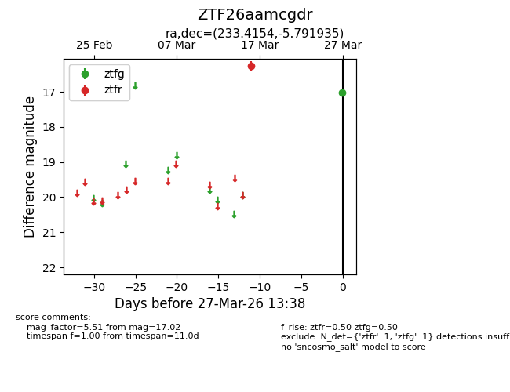
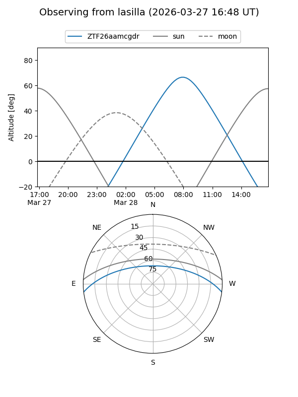
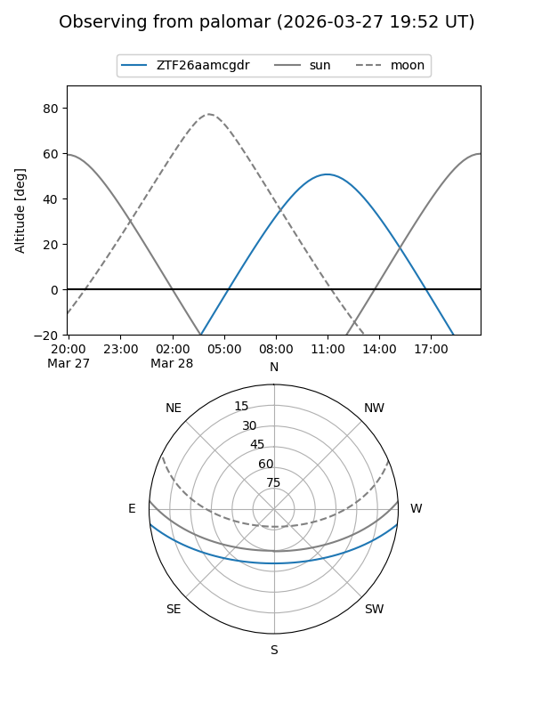

ZTF26aamcgdr
Target ZTF26aamcgdr at 2026-03-27 13:40
Aliases and brokers:
FINK: link
Lasair: link
ALeRCE: link
alt names
ZTF26aamcgdr (ztf,fink_ztf)
Coordinates:
equatorial (ra, dec) = 233.4154,-5.79193
equatorial (HMS+DMS) = 15:33:39.70,-05:47:30.97
galactic (l, b) = (359.0435,+38.80851)
Flags:
Photometry:
last ztfg=17.02, ztfr=16.26
1 ztfg, 1 ztfr detections
Lightcurve

Visibility


Additional plots